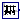

Library of noise blocks
This sublibrary contains blocks that generate reproducible noise with pseudo random numbers. Reproducibility is important when designing control systems, either manually or with optimization methods (for example when changing a parameter or a component of a control system and re-simulating, it is important that the noise does not change, because otherwise it is hard to determine whether the changed control system or the differently computed noise has changed the behaviour of the controlled system). Many examples how to use the Noise blocks are provided in sublibrary Blocks.Examples.Noise.
When using one of the blocks of this sublibrary, on the same or a higher level, block Noise.GlobalSeed must be dragged resulting in a declaration
inner Modelica.Blocks.Noise.GlobalSeed globalSeed;
This block is used to define global options that hold for all Noise block instances (such as a global seed for initializing the random number generators, and a flag to switch off noise). Furthermore, the impure random number generator impureRandom is initialized here.
Please note that only one globalSeed instance may be defined in the model due to the initialization of the impureRandom(..) random number generator! So, the block will usually reside on the top level of the model.
When using a noise block of this package, at a minimum the following parameters must be defined:
Parameter Description samplePeriod Random values are drawn periodically at the sample rate in [s] defined with this parameter (time events are generated at the sample instants). Between sample instants, the output y is kept constant. distribution data Every noise block in this package needs additional data to describe the respective distribution. A random number distribution maps the drawn random numbers from the range 0.0 ... 1.0, to the desired range and distribution.
As a simple demonstration, see example Blocks.Examples.Noise.UniformNoise. In the next diagram, a simulation result is shown for samplePeriod=0.02 s and uniform distribution with y_min=-1, y_max=3:
In the Advanced tab of the parameter menu, further options can be set in the noise blocks as shown in the next table:
Parameter Description enableNoise = true, if noise is generated at the output of the block (this is the default).
= false, if noise generation is switched off and the constant value y_off is provided as output.y_off If enableNoise = false, the output of the block instance has the value y_off. Default is y_off = 0.0. Furthermore, if enableNoise = true and time<startTime, the output of the block is also y_off (see description of parameter startTime below).
For every block instance, the internally used pseudo random number generator has its own state. This state must be properly initialized, depending on the desired situation. For this purpose the following parameters can be defined:
Parameter Description useGlobalSeed = true, if the seed (= Integer number) defined in the "inner GlobalSeed globalSeed" component is used for the initialization of the random number generator used in this instance of the noise block. Therefore, whenever the globalSeed defines a different number, the noise at every instance is changing. This is the default setting and therefore the globalSeed component defines whether every new simulation run shall provide the same noise (e.g. for a parameter optimization of controller parameters), or whether every new simulation run shall provide different noise (e.g. for a Monte Carlo simulation).
= false, if the seed defined by globalSeed is ignored. For example, if aerodynamic turbulence is modelled with a noise block and this turbulence model shall be used for all simulation runs of a Monte Carlo simulation, then useGlobalSeed has to be set to false.useAutomaticLocalSeed An Integer number, called local seed, is needed to initialize the random number generator for a specific block instance. Instances using the same local seed produce exactly the same random number values (so the same noise, if the other settings of the instances are the same).
If useAutomaticLocalSeed = true, the local seed is determined automatically using a hash value of the instance name of the model that is inquired with the Modelica built-in operator getInstanceName(). Note, this means that the noise changes if the component is renamed.
If useAutomaticLocalSeed = false, the local seed is defined explicitly by parameter fixedLocalSeed. It is then guaranteed that the generated noise remains always the same (provided the other parameter values are the same).fixedLocalSeed If useAutomaticLocalSeed = false, the local seed to be used. fixedLocalSeed can be any Integer number (including zero or a negative number). The initialization algorithm produces a meaningful initial state of the random number generator from fixedLocalSeed and (if useAutomaticGlobalSeed=true) from globalSeed even for bad seeds such as 0 or 1, so the subsequently drawing of random numbers produces always statistically meaningful numbers. startTime The time instant at which noise shall be generated at the output y. The default startTime = 0. For time<startTime, y = y_off. In some cases it is meaningful to simulate a certain duration until an approximate steady-state is reached. In such a case startTime should be set to a time instant after this duration.
The core of the noise generation is the computation of uniform random numbers in the range 0.0 .. 1.0 (and these random numbers are transformed afterwards, see below). This sublibrary uses the xorshift random number generation suite developed in 2014 by Sebastiano Vigna (for details see http://xorshift.di.unimi.it and Math.Random.Generators). These random number generators have excellent statistical properties, produce quickly statistically relevant random numbers, even if starting from a bad initial seed, and have a reasonable length of the internal state vector of 2, 4, and 33 Integer elements. The random number generator with an internal state vector of length 2 is used to initialize the other two random number generators. The length 4 random number generator is used in the noise blocks of this package, and every such block has its own internal state vector, as needed for reproducible noise blocks. The random number generator with a length of 33 Integer is used from the impure random number generator. It is suited even for massively parallel simulations where every simulation computes a large number of random values. More details of the random number generators are described in the documentation of package Math.Random.Generators.
The uniform random numbers in the range 0.0 .. 1.0 are transformed to a desired random number distribution by selecting an appropriate distribution or truncated distribution. For an example of a truncated distribution, see the following diagram of the probability density function of a normal distribution compared with its truncated version:
The corresponding inverse cumulative distribution functions are shown in the next diagram:
When providing an x-value between 0.0 .. 1.0 from a random number generator, then the truncated inverse cumulative probability density function of a normal distribution transforms this value into the desired band (in the diagram above to the range: -1.5 .. 1.5). Contrary to a standard distribution, truncated distributions have the advantage that the resulting random values are guaranteed to be in the defined band (whereas a standard normal distribution might also result in any value; when modeling noise that is known to be in a particular range, say ± 0.1 Volt, then with the TruncatedNormal distribution it is guaranteed that random values are only generated in this band). More details of truncated distributions are given in the documentation of package Math.Distributions.
Extends from Modelica.Icons.Package (Icon for standard packages).
| Name | Description |
|---|---|
| GlobalSeed | Defines global settings for the blocks of sublibrary Noise, especially a global seed value is defined |
|  UniformNoise | Noise generator with uniform distribution |
| Noise generator with normal distribution | |
| TruncatedNormalNoise | Noise generator with truncated normal distribution |
| Noise generator to produce band-limited white noise with normal distribution |
Defines global settings for the blocks of sublibrary Noise, especially a global seed value is defined
When using one of the blocks of sublibrary Noise, on the same or a higher hierarchical level, Noise.GlobalSeed must be dragged resulting in a declaration
inner Modelica.Blocks.Noise.GlobalSeed globalSeed;
The GlobalSeed block provides global options for all Noise blocks of the same or a lower hierarchical level. The following options can be selected:
Icon Description 
useAutomaticSeed=false (= default):
A fixed global seed is defined with Integer parameter fixedSeed. The value of fixedSeed is displayed in the icon. By default all Noise blocks use fixedSeed for initialization of their pseudo random number generators, in combination with a local seed defined for every instance separately. Therefore, whenever a simulation is performed with the same fixedSeed exactly the same noise is generated in all instances of the Noise blocks (provided the settings of these blocks are not changed as well).
This option can be used (a) to design a control system (e.g. by parameter optimization) and keep the same noise for all simulations, or (b) perform Monte Carlo Simulations where fixedSeed is changed from the environment for every simulation, in order to produce different noise at every simulation run.
useAutomaticSeed=true:
An automatic global seed is computed by using the ID of the process in which the simulation takes place and the current local time. As a result, the global seed is changed automatically for every new simulation, including parallelized simulation runs. This option can be used to perform Monte Carlo Simulations with minimal effort (just performing many simulation runs) where every simulation run uses a different noise.
enableNoise=false:
The noise in all Noise instances is switched off and the blocks output a constant signal all the time (usually zero). This option is useful, if a model shall be tested without noise and the noise shall be quickly turned off or on.
Additionally, the globalSeed instance calls function initializeImpureRandom to initialize the impure random number generators (impureRandom and impureRandomInteger). The return value of this function is stored in parameter id_impure. Whenever one of the impure random number generators need to be called, "globalSeed.id_impure" has to be given as input argument.
Note, the usage of this block is demonstrated with examples AutomaticSeed and ImpureGenerator.
Please note that only one globalSeed instance may be defined in the model due to the initialization of the impure random number generators with initializeImpureRandom! So, the block will usually reside on the top level of the model.
| Name | Description |
|---|---|
| enableNoise | = true, if noise blocks generate noise as output; = false, if they generate a constant output |
| useAutomaticSeed | = true, choose a seed by system time and process id; = false, use fixedSeed |
| fixedSeed | Fixed global seed for random number generators (if useAutomaticSeed = false) |
Noise generator with uniform distribution
A summary of the common properties of the noise blocks is provided in the documentation of package Blocks.Noise. This UniformNoise block generates reproducible, random noise at its output according to a uniform distribution. This means that random values are uniformly distributed within the range defined by parameters y_min and y_max (see example Noise.UniformNoiseProperties). By default, two or more instances produce different, uncorrelated noise at the same time instant. The block can only be used if on the same or a higher hierarchical level, model Blocks.Noise.GlobalSeed is dragged to provide global settings for all instances.
Extends from Modelica.Blocks.Interfaces.PartialNoise (Partial noise generator).
| Name | Description |
|---|---|
| samplePeriod | Period for sampling the raw random numbers [s] |
| y_min | Lower limit of y |
| y_max | Upper limit of y |
| Advanced | |
| Noise generation | |
| enableNoise | = true: y = noise, otherwise y = y_off |
| y_off | Sets y = y_off if enableNoise=false (or time<startTime, see below) |
| Initialization | |
| useGlobalSeed | = true: use global seed, otherwise ignore it |
| useAutomaticLocalSeed | = true: use automatic local seed, otherwise use fixedLocalSeed |
| fixedLocalSeed | Local seed (any Integer number) |
| startTime | Start time for sampling the raw random numbers [s] |
| Name | Description |
|---|---|
| y | Connector of Real output signal |
 Modelica.Blocks.Noise.NormalNoise
Modelica.Blocks.Noise.NormalNoiseNoise generator with normal distribution
A summary of the common properties of the noise blocks is provided in the documentation of package Blocks.Noise. This NormalNoise block generates reproducible, random noise at its output according to a normal distribution. This means that random values are normally distributed with expectation value mu and standard deviation sigma. (see example Examples.Noise.NormalNoiseProperties). By default, two or more instances produce different, uncorrelated noise at the same time instant. The block can only be used if on the same or a higher hierarchical level, model Blocks.Noise.GlobalSeed is dragged to provide global settings for all instances.
Extends from Modelica.Blocks.Interfaces.PartialNoise (Partial noise generator).
| Name | Description |
|---|---|
| samplePeriod | Period for sampling the raw random numbers [s] |
| mu | Expectation (mean) value of the normal distribution |
| sigma | Standard deviation of the normal distribution |
| Advanced | |
| Noise generation | |
| enableNoise | = true: y = noise, otherwise y = y_off |
| y_off | Sets y = y_off if enableNoise=false (or time<startTime, see below) |
| Initialization | |
| useGlobalSeed | = true: use global seed, otherwise ignore it |
| useAutomaticLocalSeed | = true: use automatic local seed, otherwise use fixedLocalSeed |
| fixedLocalSeed | Local seed (any Integer number) |
| startTime | Start time for sampling the raw random numbers [s] |
| Name | Description |
|---|---|
| y | Connector of Real output signal |
Noise generator with truncated normal distribution
A summary of the common properties of the noise blocks is provided in the documentation of package Blocks.Noise. This TruncatedNormalNoise block generates reproducible, random noise at its output according to a truncated normal distribution. This means that normally distributed random values are truncated to the band y_min ... y_max. Measurement noise has often this distribution form. By default, the standard parameters of the truncated normal distribution are derived from y_min ... y_max:
mean value = (y_max + y_min)/2,
standard deviation = (y_max - y_min)/6 (= 99.7 % of the non-truncated normal distribution are within y_min ... y_max).
For an example see Examples.Noise.Distributions. By default, two or more instances produce different, uncorrelated noise at the same time instant. The block can only be used if on the same or a higher hierarchical level, model Blocks.Noise.GlobalSeed is dragged to provide global settings for all instances.
Extends from Modelica.Blocks.Interfaces.PartialNoise (Partial noise generator).
| Name | Description |
|---|---|
| samplePeriod | Period for sampling the raw random numbers [s] |
| y_min | Lower limit of y |
| y_max | Upper limit of y |
| Advanced | |
| Noise generation | |
| enableNoise | = true: y = noise, otherwise y = y_off |
| y_off | Sets y = y_off if enableNoise=false (or time<startTime, see below) |
| mu | Expectation (mean) value of the normal distribution |
| sigma | Standard deviation of the normal distribution |
| Initialization | |
| useGlobalSeed | = true: use global seed, otherwise ignore it |
| useAutomaticLocalSeed | = true: use automatic local seed, otherwise use fixedLocalSeed |
| fixedLocalSeed | Local seed (any Integer number) |
| startTime | Start time for sampling the raw random numbers [s] |
| Name | Description |
|---|---|
| y | Connector of Real output signal |
Modelica.Blocks.Noise.BandLimitedWhiteNoiseNoise generator to produce band-limited white noise with normal distribution
A summary of the common properties of the noise blocks is provided in the documentation of package Blocks.Noise. This BandLimitedWhiteNoise block generates reproducible, random noise at its output according to a band-limited white noise distribution. This is performed by using a normal distribution with mu=0 and sigma = sqrt(noisePower/samplePeriod).
In order for this block to produce meaningful results, you should set the following parameters:
Ideal white noise contains all frequencies, including infinitely high ones. However, these usually cannot be observed in physical systems, since all physical systems in one way or the other contain low-pass filters. It is thus sufficient to generate a limited range of frequency content in the noise signal, as long as it exceeds the frequencies of the subsequent dynamics by a sufficiently high factor (of e.g. 100).
Ideal white noise has a flat, i.e. constant, power spectral density for all frequencies. It has thus infinitely high power, because the total power of a signal can be obtained by integrating the power spectral density over all frequencies. The following three ways to think of the power of a signal may be helpful:
In order to set the correct level of the band-limited white noise power spectral density,
the variance of its normal distribution can thus be influenced directly.
Recalling that the samplePeriod of the noise signal generates frequency content in the
range ±0.5/samplePeriod, the variance must be increased to generate sufficient
total signal power. The total power must match the product of the noisePower and its
frequency bandwidth 1/samplePeriod: signal power = signal variance = noisePower / samplePeriod.
Example Examples.Noise.DrydenContinuousTurbulence demonstrates how to utilize this block to model wind gust.
Extends from Modelica.Blocks.Interfaces.PartialNoise (Partial noise generator).
| Name | Description |
|---|---|
| samplePeriod | Period for sampling the raw random numbers [s] |
| noisePower | Power of white noise signal |
| Advanced | |
| Noise generation | |
| enableNoise | = true: y = noise, otherwise y = y_off |
| y_off | Sets y = y_off if enableNoise=false (or time<startTime, see below) |
| Initialization | |
| useGlobalSeed | = true: use global seed, otherwise ignore it |
| useAutomaticLocalSeed | = true: use automatic local seed, otherwise use fixedLocalSeed |
| fixedLocalSeed | Local seed (any Integer number) |
| startTime | Start time for sampling the raw random numbers [s] |
| Name | Description |
|---|---|
| y | Connector of Real output signal |